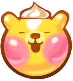
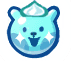

Cookie Run has a ton of jellies that each give you different types of points. These cookies can be upgraded by updating your cheerleader effect to earn more points. (You can enhance your cheerleader effect by leveling up your pre-existing cookies in each bundle) Each jelly has a vast amount of costumes in which you can customize. Costumes for jellies can be collected in either purchasing skins or reaching 1000 affection points with a cookie. Costumes do not effect jelly points and simply serve as a decorative purpose.
Bear Jellies
Bear jellies are one of the most common jellies in the game. They provide different amounts of points for each type of bear jelly there is. These cute jellies can also be customized with costumes.
Giant Yellow Bear Jelly
Points: 12
Image description: A giant, yellow bear gummy with rosy cheeks.

This is an inflated version of the regular yellow gummy bear. It is larger by size and points. These can be collected throughout the map. This gummy can be commonly found when the cookie goes into BONUS MODE.
Frozen Bear Jelly

Points: 125
Image description: A blue, shiny bear with whipped cream as hair.
This bear can be found typically in winter maps or ice maps. Frozen bear jellies can be activated by the cookie's powers or frozen bear jelly party.
Rainbow Bear Jelly
Points: 850
Image description: A rainbow bear with wings.
This jelly is immune to magnetic effect because of its wings. The only character who can collect this jelly with a magnetic effect is the Lime Cookie with his Magic Candy.
Yellow bear Jelly
Points: 5
Image description: A yellow bear.
The most common bear. You can find this on every map.
Pink bear Jelly
Points: 11
Image description: A pink bear.
The second most common bear. You can find this on every map.